The original, as published: DoITPoMS, University of Cambridge, Ferromagnetic Materials. CC BY-NC-SA 4.0, https://creativecommons.org/licenses/by-nc-sa/4.0/. As published, from https://www.doitpoms.ac.uk/tlplib/ferromagnetic/ https://www.doitpoms.ac.uk/tlplib/ferromagnetic/
Magnets are used by millions of people worldwide everyday, but what they may not realise every time they open their fridge, listen to their mp3 player or turn on their computer is that they are using a quantum mechanical phenomenon! The understanding of magnetism is extremely important in the continuing development of modern technology. For example electronic device memory is an area of intensive research as there is continuous demand for more memory in smaller devices.
All magnetic materials contain magnetic moments, which behave in a way similar to microscopic bar magnetis. In order to define a ferromagnetism as a class of magnetism, it is easiest to compare the various properties of different possible types of magnetic material. These are principally: paramagnets, ferromagnets, antiferromagnets and ferrimagnets.
Paramagnetism
In a paramagnet, the magnetic moments tend to be randomly orientated due to thermal fluctuations when there is no magnetic field. In an applied magnetic field these moments start to align parallel to the field such that the magnetisation of the material is proportional to the applied field.
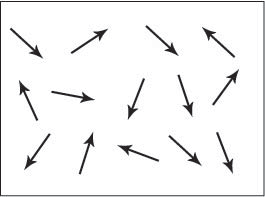
Figure A. Schematic showing the magnetic dipole moments randomly aligned in a paramagnetic sample.
Ferromagnetism
The magnetic moments in a ferromagnet have the tendency to become aligned parallel to each other under the influence of a magnetic field. However, unlike the moments in a paramagnet, these moments will then remain parallel when a magnetic field is not applied (this will be discussed later).
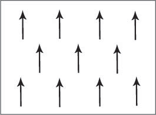
Figure B. Schematic showing the magnetic dipole moments aligned parallel in a ferromagnetic material.
Antiferromagnetism
Adjacent magnetic moments from the magnetic ions tend to align anti-parallel to each other without an applied field. In the simplest case, adjacent magnetic moments are equal in magnitude and opposite therefore there is no overall magnetisation.
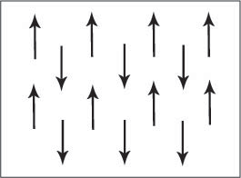
Figure C. Schematic showing adjacent magnetic dipole moments with equal magnitude aligned anti-parallel in an antiferromagnetic material. This is only one of many possible antiferromagnetic arrangements of magnetic moments.
Ferrimagnetism
The aligned magnetic moments are not of the same size; that is to say there is more than one type of magnetic ion. An overall magnetisation is produced but not all the magnetic moments may give a positive contribution to the overall magnetisation.
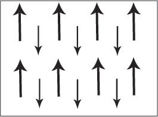
Figure D. Schematic showing adjacent magnetic moments of different magnitudes aligned anti-parallel.
Below is a periodic table showing the elements and the types of magnetism at room temperature:
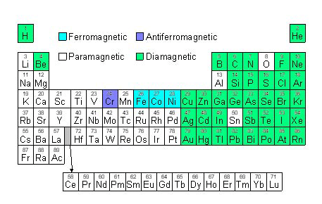
Figure E. Diagram of a periodic table showing elements coloured according to the type of magnetism they show at room temperature.
It was discovered by Oersted in 1820 that a magnetic compass needle was deflected when placed near to an electric current; this was a breakthrough in the understanding of magnetism that later led to Ampère observing that the magnetic field of a solenoid being identical to that of a magnet.
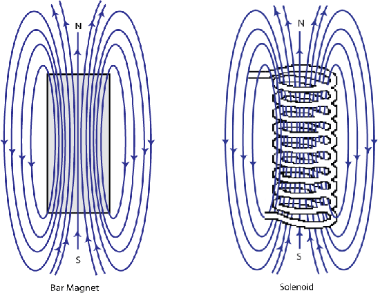
Figure F. Schematic showing the shape of the magnetic field around a bar magnet and a solenoid are identical.
Ampère then hypothesised that all magnetic effects were due to current loops and that the magnetic effects in materials must be due to “molecular currents”, attributed to the movement of electrons. However, the currents predicted by this model were unfeasibly large and a second origin of magnetism was required. This second magnetic mechanism was spin, postulated by Dirac in 1928, after he solved the fully relativistic quantum mechanical equations governing the electron.
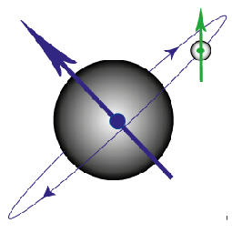
Figure G. Diagram to show the magnetic moment produced by an electron orbiting the nucleus and that produced by the spin of the electron.
The spin of an electron is hard to visualise, but has the properties of a small magnetic moment pointing either “up” or “down”. Within an atom, electrons are arranged in orbitals, with a maximum of two electrons with opposite spin occupying each orbital (due to the Pauli Exclusion Principle). The orbitals are further grouped into shells. In all atoms except for hydrogen there is more than one electron and these electrons can interact with each other as well as with the nucleus, leading to “coupling”.
As outlined above, the total magnetic moment of a free atom has two contributions from each electron:
In an atom with a single electron, there are just two magnetic fields produced which can interact (see above figure). The magnetic field from the electron’s spin interacts with the magnetic field from its movement around the nucleus, leading to so-called spin-orbit coupling.
In an atom with more than one electron, the total magnetic moment of the atom will depend on the spin-orbit (intra-electron), spin-spin (inter-electron) and orbit-orbit (also inter-electron) coupling. The spin-orbit coupling is weak for light atoms and generally can be ignored in calculating the total angular momentum.
The total magnetic moment can be determined by simple vector addition of the fields.
Important results of this coupling are as follows. When working out the moment on an atom, only incomplete electron shells (groups of orbitals) contribute. Furthermore, electrons arrange themselves in shells in such a way as to maximise total spin. Putting these two results together, we see that once a shell is more than half full, spins begin to pair up within orbitals and the available magnetic moment decreases. This underlies the existence of magnetic order in elements in the middle of the 3d series and the middle of the 4f series.
For ferromagnetism to occur there must be an internal driving force that causes parallel alignment of the spins of the electrons to be the more favourable state. Weiss explained this observed behaviour by proposing the presence of an internal interaction between the localised moments called a molecular field. Whilst Weiss’ phenomenological model represented a significant step forward, the microscopic explanation of his molecular field required the laws of quantum mechanics. The important term in the interaction of the localised moments is called the exchange interaction.
The exchange interaction occurs due to the Pauli Exclusion Principle; if two electrons have different spins then they can occupy the same orbital (angular momentum state), hence be closer to each other and they will therefore have a stronger Coulomb repulsion.
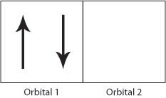
Figure H. Schematic showing two electrons occupying orbital 1 producing a strong Coulomb repulsion compared to Figure I.
If the electrons have the same spin then they will occupy different orbitals and therefore have less Coulomb repulsion as they will be further apart. In this way, the exchange energy (the energy due to the repulsion between the two electrons) is minimsed.
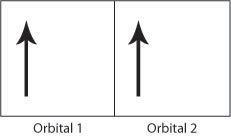
Figure I. Schematic showing two electrons occupying different orbitals.
Therefore the Coulomb repulsion force favours the parallel alignment of all the electron spins as the exchange energy is minimised. The above rules help to explain the strong ferromagnetic order seen in iron, cobalt and nickel. The Flash demo below allows the electronic structure of the transition elements in the 3rd row of the periodic table and the numbers of unpaired electrons to be seen.
Taking the elements shown in the demo above as an example, it is, however, not straightforward to predict the presence or form of magnetic order from the electronic configuration alone as not all elements with unpaired electrons are ferromagnetic. There are other factors, principally the atomic structure, that go towards determining the type of magnetism exhibited by the elements. See the discussion on band theory in reference 1.
This theory can be summarised into rules:
Above a critical temperature Tc, the Curie temperature, all ferromagnetic materials become paramagnetic. This is because thermal energy is large enough to overcome the cooperative ordering of the magnetic moments.
The susceptibility of a material, χ, indicates how dramatically a material responds to an applied magnetic field, and is defined as the ratio of the magnetisation of the material, M, and the applied magnetic field, H.
\[\chi = \frac{M}{H}\;\;\;\;{\rm{equation}}\;1\]
The magnetisation of a material, M, is defined as the magnetic moment per unit volume or per unit mass of a material and is dependent on the individual magnetic dipole moments of the atoms in the material and on the interactions of these dipoles with each other.
Above the Curie Temperature there will be a change in the susceptibility as the material becomes paramagnetic, therefore giving the equation:
\[\chi = \frac{C}{{T - {T_c}}} = \frac{M}{H}\;\,\,\,{\rm{equation}}\;2\]
where C is a constant.
The graph below shows the saturation magnetisation (ie that obtained in a high magnetic field) of a ferromagnetic element, nickel, as a function of temperature. We see that the saturation magnetisation decreases with increasing temperature until it falls to zero at the Curie temperature where the material becomes paramagnetic:
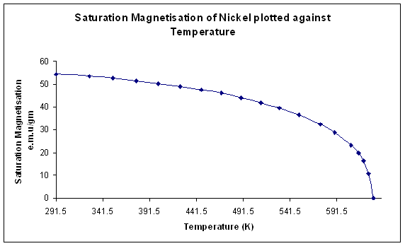
Figure J. Variation of saturation magnetisation with temperature for Nickel. (Data from Weiss and Forrer, 1926)
Differentiation of Equation 2 with respect to temperature shows that the susceptibility is a maximum at the Curie temperature. This is no surprise; it is easiest to increase the magnetic moment of the material by applying a magnetic field when the material is undergoing a transition between magnetic order and disorder. The graph below for nickel shows the susceptibility tending to infinity as the temperature moves closer to the Curie temperature:
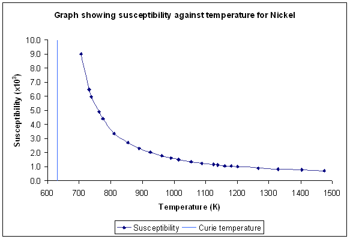
Figure K. Variation of susceptibility with temperature for Nickel (Sucksmith and Pearce, 1938)
Domains are regions of a ferromagnetic material in which the magnetic dipole moments are aligned parallel. When the material is demagnetised the vector summation of all the dipole moments from all the domains equals zero. When the material is magnetised the vector summation of the dipoles gives an overall magnetic dipole (we will discuss this in more detail later).
From our previous discussion of the exchange interaction it would appear that the most stable state would be that of a single domain where all the electron spins would be aligned parallel. However, while this minimises the energy contribution arising from the exchange interaction, there are other contributions to the total magnetic energy that must be considered:
We will now consider each in turn:
If a material consists of a single domain then it behaves as a block magnet (Figure L (i) below) and so a “demagnetising field” (the blue arrows) must be present around the block. This external, demagnetising field has a magnetostatic energy that depends on the shape of the sample and is the field that allows work to be done by the magnetised sample (e.g. lifting another ferromagnetic material against the force of gravity). In order to minimise the total magnetic energy the magnetostatic energy must be minimised. This can be achieved by decreasing the external demagnetising field by dividing the material into domains (Figure L (ii)). Adding extra domains increases the exchange energy, as the domains cannot align parallel, however the total energy has been decreased as the magnetostatic energy is the dominant effect. The magnetostatic energy can be reduced to zero by a domain structure that leaves no external demagnetising field (Figure L (iii)).
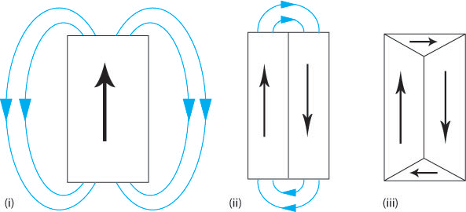
Figure L. Schematic showing how the addition of domains can reduce the external demagnetising field therefore reducing the magnetostatic energy.
This is the main driving force for the formation of domains.
Up until now, we have ignored the influence of the atomic lattice structure; however this also has an affect on the total energy of a magnetised sample. A ferromagnetic material has ‘easy’ crystallographic directions along which it is preferred that the magnetisation vector points and ‘hard’ directions along which a higher field is required to achieve the same magnetisation. Therefore, it is easiest to magnetise a ferromagnetic material along these easy axes, as shown by the schematic below.
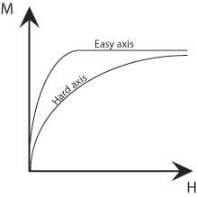
Figure M. Schematic showing the difference in size of field required to achieve the same magnetisation along easy and hard axes.
There is an energy difference associated with magnetisation along the hard and easy axes which is given by the difference in the areas under (M,H) curves. This is called the magnetocrystalline energy. This energy can be minimised by forming domains such that their magnetisations point along the easy crystallographic directions. The ideal material might have easy crystallographic directions perpendicular to one another as then both the magnetostatic and magnetocrystalline energies could both be minimised (Figure L (iii) above). In the regions bounding the domains, the domain walls, there must be a change in the direction of the magnetisation. Therefore, it cannot be aligned along easy axes and so large domains with few domain walls minimise the magnetocrystalline energy.
Below a table shows a summary of the easy, hard and intermediate directions in iron, nickel and cobalt:
| Fe | Ni | Co | |
| bcc | fcc | hexagonal | |
| Easy | <100> | <111> | <1000> |
| Intermediate | <110> | <110> | |
| Hard | <111> | <100> | <1010> |
When a ferromagnetic material is magnetised it changes length. This is known as magnetostriction; an increase in length along the direction of magnetisation is positive magnetostriction (e.g. in Fe), and a decrease in length is negative magnetostriction (e.g. in Ni). These length changes are usually extremely small; in the range of tens of parts per million. However, they do affect the domain structure of the material.
In iron the change in length causes the domains of closure to attempt to elongate horizontally (shown in blue in Figure N (i)) and the vertical domains to attempt to elongate vertically (shown in green in Figure N (i)). It is impossible for both to be accommodated and so this causes elastic strain in the material. The elastic strain energy is proportional to the volume of the domains of closure hence magnetostrictive energy can be minimised by decreasing the size of these domains. Reducing the volume of the domains of closure also requires the primary domains to decrease in size and increase in number (Figure N (ii)). The addition of extra domain walls increases the magnetocrystalline and exchange energy contributions to the total energy.
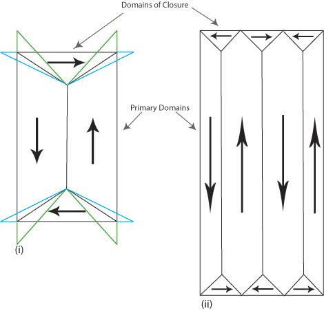
Figure N. Schematic showing the attempted change in shape of the domains (i) and the actual change (ii) due to magnetostriction.
The actual domain structure is a compromise of all the aforementioned energy contributions.
Domain walls are the regions between domains where the direction of magnetisation must change, usually by either 180° or 90°.
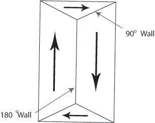
Figure O. Diagram showing domain walls.
The width of domain walls is controlled by the balance of two energy contributions:
The exchange energy favours wide walls where adjacent magnetic dipole moments can be as close to parallel as possible, whereas the magnetocrystalline energy favour sharp changes in the dipole moments between the favoured directions in the crystal so that as few dipole moments as possible point along “non-easy” directions. The actual width is determined by the minimum of the total energy.
The most favourable domain walls are those which do not require an external demagnetising field. Three walls, or “boundaries” of this type are discussed below.
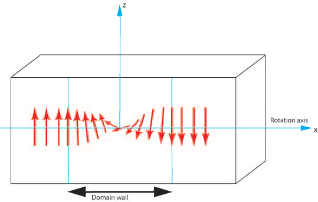
Figure P. Diagram showing the rotation of magnetic moments through a 180° domain wall.
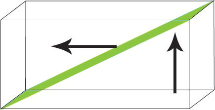
Figure Q. Diagram showing the rotation of magnetic moments in a tilt boundary
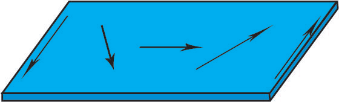
Figure R. Diagram showing the rotation of magnetic moments in a thin film in a plan view.
Magnetic hysteresis is an important phenomenon and refers to the irreversibility of the magnetisation and demagnetisation process. When a material shows a degree of irreversibility it is known as hysteretic. We will now explore the physics behind ferromagnetic hysteresis.
When a demagnetised ferromagnetic material is placed in an applied magnetic field the domain that has a direction closest to that of the applied field grows at the expense of the other domains. Such growth occurs by motion of the domain walls. Initially domain wall motion is reversible, and if the applied field is removed the magnetisation will return to the initial demagnetised state. In this region the magnetisation curve is reversible and therefore does not show hysteresis.
The crystal will contain imperfections, which the domain boundaries encounter during their movement. These imperfections have an associated magnetostatic energy. When a domain wall intersects the crystal imperfection this magnetostatic energy can be eliminated as closure domains form. This pins the domain wall to the imperfection, as it is a local energy minima. The applied magnetic field provides the energy to allow the domain wall to move past the crystal imperfection, but the domains of closure cling to the imperfection forming spike-like domains that stretch as the domain wall moves further away. Eventually these spike domains snap off and the domain wall can move freely. As the spike domains snap off there is a discontinuous jump in the boundary leading to a sharp change in the magnetic flux, which can be detected by winding a coil around the specimen connected to a speaker. In doing so, crackling noises are heard corresponding to the spike domains breaking away from the domain walls. This phenomenon is known as the Barkhausen effect.
Eventually all the domain walls will have been eliminated leaving a single domain with its magnetic dipole moment pointing along the easy axis closest to the direction of the applied magnetic field. Further increase in magnetisation can occur by this domain rotating away from the easy direction to an orientation parallel to that of the externally applied field. The magnetisation of the material at this stage is called the saturation magnetisation (see Figure J) . The ease of this final rotation is dependent on the magnetocrystalline energy of the material; some materials require a large field to reach this saturation magnetisation.
If the external applied field is removed the single domain will rotate back to the easy direction in the crystal. A demagnetising field will be set up due to the single domain, and this field initiates the formation of reverse magnetic domains as these will lower the magnetostatic energy of the sample by reducing the demagnetising field. However the demagnetising field is not strong enough for the domain walls to be able to grow past crystal defects so they can never fully reverse back to their original positions when there is no external applied field. This results in the hysteresis curve as some magnetisation will remain when there is no external applied field. This magnetisation is called the remanent magnetisation, Br. The field required to reduce the magnetisation of the sample to zero is called the coercive field Hc. And the saturation magnetisation Bs is the magnetisation when all the domains are aligned parallel to the external field. These are shown on the schematic below:
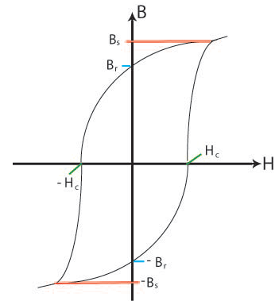
Figure S. Schematic showing the general shape of the hysteresis curve with some relevant points marked;
Bs, the saturation magnetisation; Br, the remanent magnetisation; Hc, the coercive field.
The movie clip below shows the domain structure as the material is subjected to a hysteresis cycle.
Ferromagnetic materials are further classified as soft or hard. Hard magnets are also called permanent magnets. These require a large field to demagnetise (and magnetise). Generally hard magnets have a large remenant magnetisation. Soft magnets, however, are easily magnetised and demagnetised, they have a small coercive field, and generally a small remanent magnetisation. Soft and hard magnets have different applications depending on the ease of magnetisation and demagnetisation required. See the animation below for examples of hard and soft magnets, their hysteresis curves and applications.
We have already met magnetocrystalline anisotropy in the section about domains where it was stated that there were easy and hard axes in a crystalline material such that a magnetic moment would preferentially orient along the former. The magnetocrystalline anisotropy energy is the energy difference between samples magnetised along the easy and hard directions. It is important to note that the spontaneous magnetisation is the same for both directions but the external applied field required to reach this value is different.
To produce the spontaneous magnetisation the applied field must re-orient the atomic orbital in order to re-orient the direction of the electron spin; this is due to the spin-orbit coupling. The atomic orbitals are strongly coupled to the lattice and so resist the change in orientation. In most magnetic materials the spin-orbit coupling is weak; however in some heavy rare-earth metals the coupling is strong. In the latter case, the resistance to re-orientating the domains away from the easy crystallographic directions is high and requires a large coercive field. Such materials have uses as permanent magnets.
Magnetocrystalline anisotropy decreases with increasing temperature, until at temperatures approaching the Curie temperature there is no preferred orientation of the magnetisation.
If a sample is non-spherical it is easier to magnetise with the dipole moments pointing along a long axis. The field required to magnetise the sample must overcome the demagnetising field, which is minimised if it the magnetisation lies along the long axis. The magnetisation produces surface poles, and the magnitude of the demagnetising field decreases as the distance between the poles increases. This therefore has consequences for the shape anisotropy of the sample: the more prolate a sample is, the closer the distance between poles becomes, and the larger the demagnetising field and shape anisotropy is (Figure T).
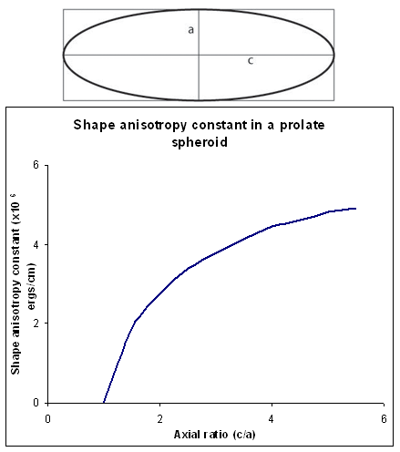
Figure T. Schematic showing the shape anisotropy constant for a prolate spheroid
It is possible to produce anisotropy in polycrystals by using a treatment with directional characteristics giving texture to the sample. Possible processes include:
This TLP has covered the basic points of ferromagnetism:
\[\chi = \frac{C}{{T - {T_c}}} = \frac{M}{H}\;\,\,\,{\rm{equation}}\;2\;\rm{in\;text}\]